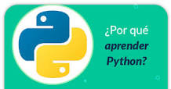
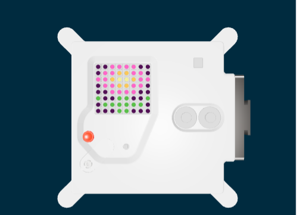

Kardio dice ¿Ya has programado antes?
Probablemente ya hayas programado con programas de bloques de colores como Scratch ¡Vamos a dar un paso más!
Hoy comenzaremos con nuestro primer código en Python, pero ....
Es uno de los lenguajes de programación más versátiles que existen, puede ser usado en muchos campos diferentes. Es decir, permite programar desde videojuegos hasta aplicaciones móviles. Es fácil de aprender. Si comprendes Python, podrás entender más fácilmente otros lenguajes de programación.
Lumen dice ¿Quieres que te ayude a comenzar a escribir tu primer código? (Clickea con el ratón)
Lo primero que haremos es dibujar una mascota en el simulador de Python Trinket.
Abra el proyecto inicial de Trinket: Pet
Escribe las configuraciones iniciales para que el código se conecte a la Astro Pi, se asegura de que la pantalla LED del Astro Pi se muestre en el sentido correcto y podamos empezar a dibujar en nuestra matriz de LED.
# Configuraciones iniciales
from sense_hat import SenseHat
from time import sleep
sense = SenseHat()
sense.set_rotation(0)
Una matriz de LED es una cuadrícula de LED que se puede controlar individualmente o en grupo para crear diferentes efectos de iluminación. La matriz de LED del Sense HAT tiene 64 LEDES que se muestran en una cuadrícula de 8 x 8. Los LED son RGB (Red, Green and Blue) se pueden programar para producir una amplia gama de colores.